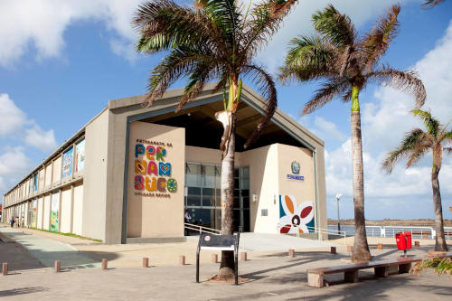
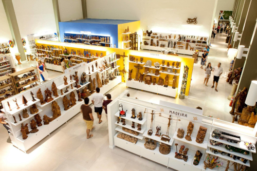

Centro de Artesanato de Pernambuco
O Centro de Artesanato é parada obrigatória para os turistas que querem levar para casa uma lembrança da viagem. A grande loja conta com mais de 25 mil peças produzidas por artesãos de todo o estado. O espaço é extremamente bem organizado e tem ambientes decorados para que o visitante possa visualizar a utilização das peças nos diversos ambientes da casa.
Local:
Com uma área de mais de 2,5 mil m², o espaço traz ambientes decorados para que o visitante possa visualizar a utilização de peças artesanais em espaços como sala de estar, sala de jantar, quarto, entre outros, através de um olhar contemporâneo e conta com diversidade artesanal, corredores amplos, vista privilegiada para o mar e preços que cabem no bolso de todos, há mais de nove anos anos funcionando em frente à Praça do Marco Zero.
A loja tem artesanato das mais diversas matérias-primas, como cerâmica, madeira, vidro, metal, renda, têxtil e outros.
O Centro é mais uma ação integrada do Governo do Estado, através da Diretoria Geral de Promoção da Economia Criativa da Agência de Desenvolvimento Econômico de Pernambuco (Adepe), ligada à Secretaria de Desenvolvimento Econômico de Pernambuco (SDEC), e funciona como ponto de convergência entre todas as iniciativas do Programa do Artesanato de Pernambuco (PAPE), como a Fenearte, a Loja Itinerante do Artesanato de Pernambuco e o apoio aos artesãos nas diversas feiras realizadas no Brasil.
Acesso:
Endereço: Av. Alfredo Lisboa.
Valor de entrada: gratuito.
Horário de funcionamento: de segunda a sábado, das 8h às 19h; domingo, das 8h às 16h.
Referências: